在校园日常学习与办公中，课程课件、培养方案、考试通知、实验报告等资料散落在班级群、个人U盘、网盘等各处，存在以下典型痛点：
| 痛点 | 具体表现 | 传统解决方式的局限 |
|---|---|---|
| 资料分散 | 同一门课的课件可能分布在多个群文件、多个同学的U盘中 | 每次找资料需要翻多个渠道，效率极低 |
| 查找困难 | 只能靠"文件名记忆"去找，记不清文件名就找不到 | 没有内容级检索能力，无法按语义搜索 |
| 版本混乱 | 同一份培养方案被反复修改，群里同时存在多个版本 | 无法区分新旧版本，容易用错过期文件 |
| 信息无法问答 | 培养方案里的学分要求、考试通知里的细则需要人肉翻阅 | 文档只能"看"，不能"问" |
本项目正是针对上述痛点，构建一套本地化部署的校园资料智能检索系统：把校园文档统一托管、自动分类、语义检索，并基于RAG（检索增强生成）架构实现"带来源标注的智能问答"，全程使用本地开源模型，无需调用外部付费API，保障学生课件、培养方案等敏感校园数据不出校。
| 层级 | 技术组件 | 选型依据 |
|---|---|---|
| 后端框架 | FastAPI + Uvicorn | 轻量、性能高、自带接口文档（/docs），适合本地部署 |
| 数据库 | SQLite（SQLAlchemy ORM） | 零配置、单文件、免部署，满足轻量场景 |
| 向量编码 | BAAI/bge-small-zh-v1.5 | 中文语义效果好、模型小（约90MB）、CPU可实时推理 |
| 大模型 | Ollama 部署 Qwen2.5:3B | 本地运行、数据不出校、3B参数在CPU上可运行 |
| 前端框架 | Vue3 + Vite + Pinia + VueRouter | 组件化多页面应用，状态管理统一，路由级权限控制 |
| UI组件库 | Element Plus | 成熟Vue3组件库，表格/弹窗/表单开箱即用 |
| 文本解析 | PyMuPDF / python-docx | 分别解析PDF与Word文档，纯本地处理 |
系统采用轻量前后端分离架构，无重型依赖，部署简单：
入库链路：
用户上传文档 → 按类型提取文本(PDF/Word/TXT) → 按语义分块(每块约300字)
→ 向量编码(bge-small-zh) → 写入chunks表 → 调用大模型自动分类 → 写入documents表问答链路：
用户提问 → 问题向量化 → 余弦相似度检索Top3文本块 → 相似度阈值判断(低分走正常对话)
→ 拼接上下文Prompt → 本地大模型流式生成(SSE逐字返回) → 前端打字机渲染 → 标注参考来源
→ 结束后自动存入问答历史版本管理链路：
上传同名文档 → 检测同名最新版 → 弹出覆盖确认 → 旧版标记is_latest=0
→ 新文档version+1、parent_doc_id指向旧版 → 管理员可查看历史版本链并回滚| 字段名 | 类型 | 说明 |
|---|---|---|
| id | 整数(主键) | 文档主键，自增 |
| filename | 字符串 | 用户上传的原始中文文件名 |
| filetype | 字符串 | 文件类型：pdf/word/txt |
| file_path | 字符串 | 服务器存储的安全文件名路径（UUID命名防冲突） |
| content | 长文本 | 提取后的文档全文内容 |
| category | 字符串 | AI自动分类标签（培养方案/考试通知/课件资料/行政通知/社团文件/作业） |
| category_confirmed | 整数 | 是否被管理员人工修正过（0=AI分类，1=人工修正） |
| version | 整数 | 文档版本号，从v1开始递增 |
| is_latest | 整数 | 是否为当前最新版（1=最新，0=历史版），学生端仅展示最新版 |
| parent_doc_id | 整数 | 上一版本文档id，用于追溯历史版本链 |
| uploaded_at | 时间 | 文档上传时间 |
| 字段名 | 类型 | 说明 |
|---|---|---|
| id | 整数(主键) | 分块主键，自增 |
| doc_id | 整数 | 所属文档id，关联documents表 |
| chunk_text | 长文本 | 分块后的文本片段 |
| embedding | 文本(JSON) | 文本片段对应的向量编码，用于相似度检索 |
本模块负责文档分块、向量编码入库与相似度检索，是"能问答"的核心。
核心实现：
def search_top3_chunks(db_path: str, question: str) -> list:
"""问题向量化后与库中分块做余弦相似度匹配，返回Top3"""
model = get_encoder() # 复用全局向量模型，避免重复加载
q_vec = model.encode(question) # 问题编码
scored = []
for chunk in all_chunks: # 遍历库中分块
c_vec = json.loads(chunk["embedding"])
sim = cosine_similarity(q_vec, c_vec) # 余弦相似度
scored.append((sim, chunk["text"], chunk["doc_id"]))
scored.sort(reverse=True, key=lambda x: x[0])
return [{"score": float(s), "text": t, "doc_id": d} for s, t, d in scored[:3]]通过OpenAI兼容协议调用Ollama本地部署的Qwen2.5:3B模型，实现回答生成、文档自动分类与SSE流式输出。
client = OpenAI(
base_url="http://localhost:11434/v1", # Ollama本地服务
api_key="ollama",
timeout=120.0, # 本地CPU推理较慢，放宽超时
max_retries=0 # 关闭自动重试，避免等待时间翻倍
)
def chat_stream(prompt: str):
"""流式生成：SSE逐块返回内容，首字2-3秒即可见"""
response = client.chat.completions.create(
model="qwen2.5:3b",
messages=[{"role": "user", "content": prompt}],
temperature=0.3,
stream=True, # 开启流式
max_tokens=600,
extra_body={"keep_alive": -1} # 模型常驻内存，避免每次重新加载
)
for chunk in response:
if chunk.choices[0].delta.content:
yield chunk.choices[0].delta.content文档上传后自动取前500字内容，调用本地大模型将文档分到6类校园场景：培养方案、考试通知、课件资料、行政通知、社团文件、作业。同时提供管理员人工修正接口，修正后的标注数据可用于后续模型持续微调。
def classify_document(doc_content: str) -> str:
prompt = f"""你是校园文档分类助手，把下面这份文档分到以下6类中的一类：
可选分类：培养方案、考试通知、课件资料、行政通知、社团文件、作业
作业指学生提交的实验报告、课程作业、用例规约等；课件资料指老师上课用的PPT、讲义、教案。
只返回分类名称。
文档内容：{preview}
分类结果："""
# 优先精确匹配 → 同义词兜底（"实验/作业/用例"→作业，"课件/讲义/教案"→课件资料）→ 未分类# 上传时的版本升级核心逻辑（先查旧版，再保存新文档）
old = db.query(Document).filter(
Document.filename == file.filename,
Document.is_latest == 1
).first()
doc = save_document(db, file.filename, filetype, file_path, content)
if old:
old.is_latest = 0 # 旧版转为历史版
doc.version = old.version + 1
doc.parent_doc_id = old.id # 建立版本链Vue3多页面应用（frontend/），按角色组织界面：
系统共提供20+个RESTful接口，均通过FastAPI实现，自带Swagger文档（/docs）。
参数：file（文件）、confirm（同名覆盖确认标志）；鉴权：Authorization: Bearer <token>（教师角色）
流程：校验教师身份 → 校验格式(PDF/Word/TXT) → 检测同名 → 提取文本 → 保存入库（记录teacher_id归属）→ 分块向量化 → AI自动分类
返回：{msg, filename, version, category}
说明：返回所有最新版文档（is_latest=1），按上传时间倒序，学生端数据源
返回：[{id, filename, category, version}]
参数：keyword（模糊匹配文件名）
返回：匹配的文档列表
说明：返回文档元数据与提取的全文内容，供详情弹窗展示
说明：按类型返回原始文件（PDF直接预览、TXT直接显示、Word下载），保留原始格式
鉴权：Bearer Token（教师角色）
说明：删除数据库记录并清理服务器上的原始文件
参数：new_category
鉴权：Bearer Token（教师角色）
说明：教师手动调整AI分类结果，标记category_confirmed=1
说明：通过parent_doc_id递归遍历同一文件名的所有历史版本，支持一键回滚
参数：q（问题文本）；鉴权：Bearer Token（登录用户）
流程：问题向量化 → Top3检索 → 相似度阈值判断（低分走正常对话）→ 拼接Prompt → 本地大模型流式生成（SSE协议：data: {"c":"..."} 逐块 → data: {"sources":[...]} → data: [DONE]）→ 前端打字机渲染 → 结束后自动保存问答记录（默认私有）
参数：username、password（≥4位）；角色固定为 student，用户名唯一校验，密码加盐SHA256存储
参数：username、password；返回 token + role，token 写入 users 表，禁用账号拒绝登录
鉴权：Bearer Token；返回 {user_id, username, role}
参数：keyword（可选，搜索问题/答案）；返回本人全部问答记录
说明：给本人问答记录添加备注，备注可见性跟随问答权限
参数：permission（private / link / public）；私有问答不允许生成分享链接
说明：返回分享token，供落地页 /qa/share/{token} 使用（免登录）
鉴权：Bearer Token（登录学生/教师均可）；联查 users 表按提问时间倒序返回全部公开问答，携带提问者用户名、备注、追加备注列表（qa_notes）与教师评语
鉴权：Bearer Token（登录学生）；参数：content（非空校验，前端限200字）
说明：仅可给公开问答追加备注；每次调用新增一条 qa_notes 记录，不覆盖旧备注；备注总量（旧note + qa_notes）达上限 QA_NOTES_LIMIT=10 时返回 400"该问答备注已达上限（10条）"
说明：免登录查看用户公开信息与其公开问答列表
参数：old_password、new_password；校验原密码后重新加盐哈希存储
鉴权：Bearer Token（教师角色）；仅返回学生 role 的公开问答
鉴权：Bearer Token（教师角色）；参数：note（评语内容，留空清除）
说明：仅可对自己上传文档关联的公开问答写评语（归属校验同删除接口）；评语与学生自己的备注（note）相互独立，展示在学生历史/个人主页/分享页
鉴权：Bearer Token（教师角色）；校验问答为公开权限且来源文档归属于该教师（teacher_id匹配）
鉴权：Bearer Token（admin角色）；返回全部用户及账号状态
鉴权：Bearer Token（admin角色）；创建 role=teacher 账号
鉴权：Bearer Token（admin角色）；说明：直接删除账号并级联清理该用户上传的文档与该用户全部问答记录；不能删除自己、不能删除admin角色
鉴权：Bearer Token（admin角色）；查看/删除全部用户公开问答
本项目全程使用大模型辅助开发，以下记录真实开发过程中遇到的典型Bug与AI协同定位修复的过程，是"人机协同开发"能力的最直接证据。
本项目全程使用大模型辅助开发，核心Prompt设计思路：
Prompt证据链说明：项目在backend/prompt-evidence目录下保留了3份核心Prompt开发证据：
| 证据文件 | 覆盖功能模块 | 证据要点 |
|---|---|---|
| prompt-evidence-1-backend-rag.md | 后端基础与RAG检索 | 文档解析、向量检索、自动分类、版本管理，6个Bug修复 |
| prompt-evidence-2-local-llm.md | 本地大模型与流式问答 | Ollama部署、闲聊阈值、SSE流式提速，6个Bug修复 |
| prompt-evidence-3-users-frontend.md | 用户权限与前端工程化 | 三角色、留痕分享、权限迁移、评语删除、Vue3美化，11个Bug修复 |
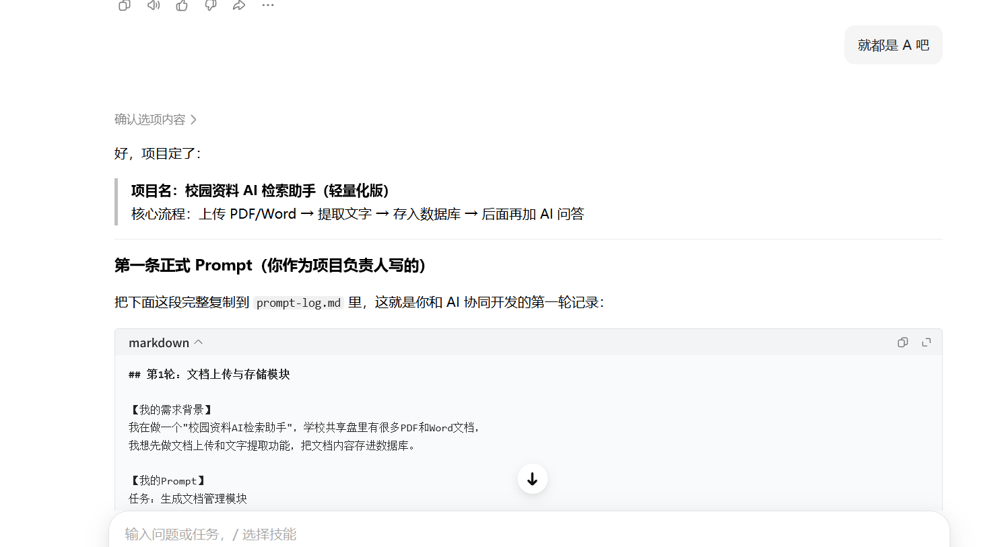
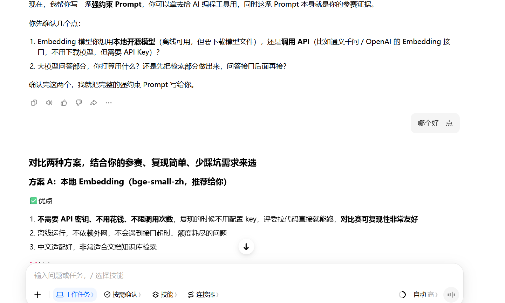
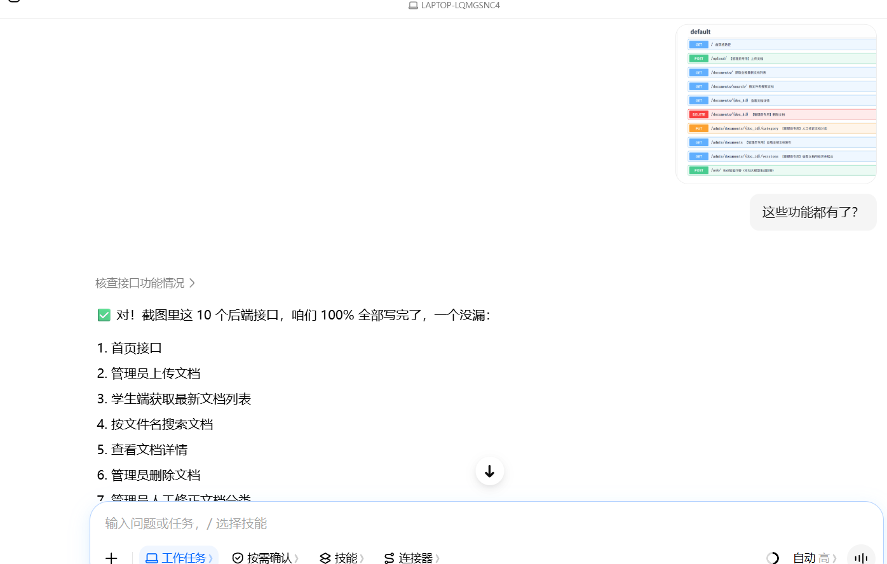
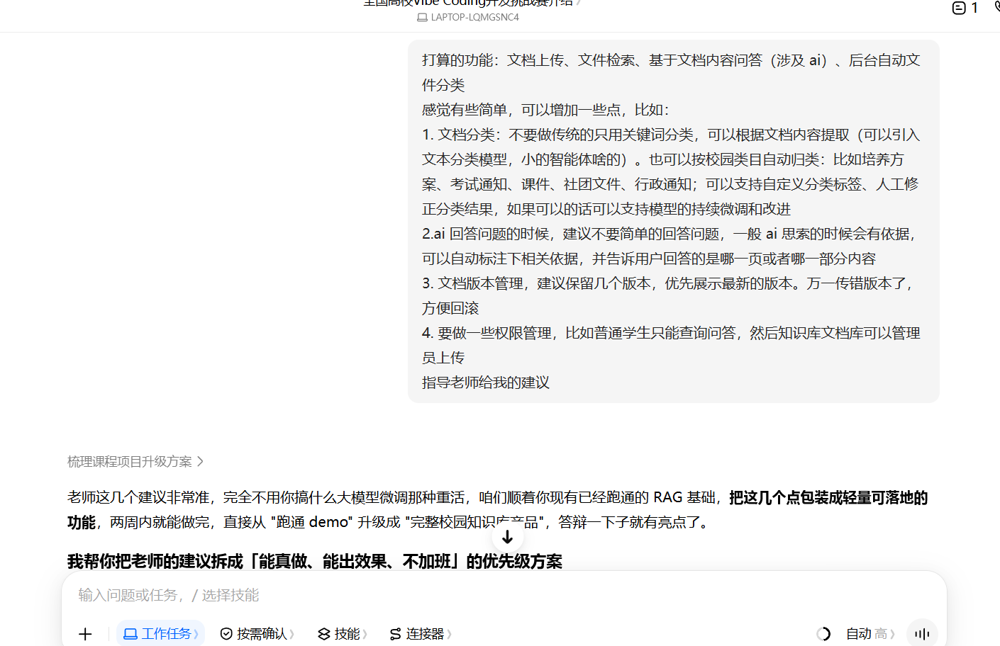
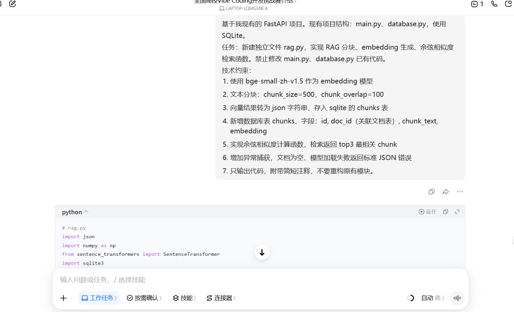
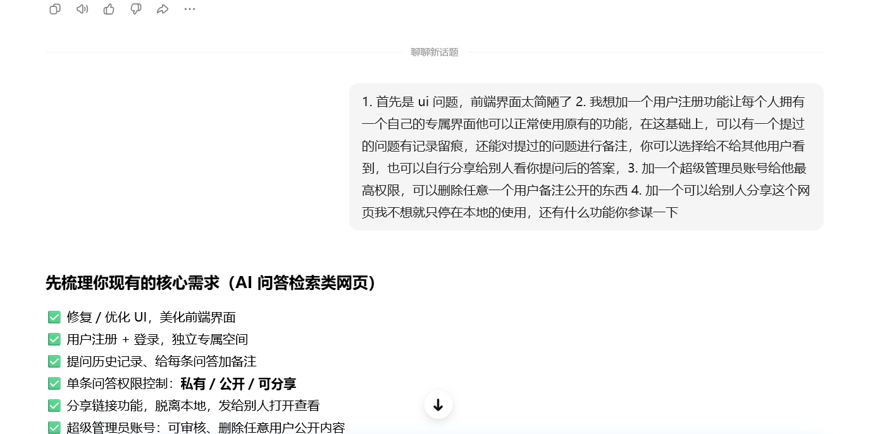
向AI一次性提出注册/独立空间/问答留痕/备注/权限控制/分享链接/超级管理员等完整需求，AI自动梳理成结构化需求清单，逐条确认实现范围。
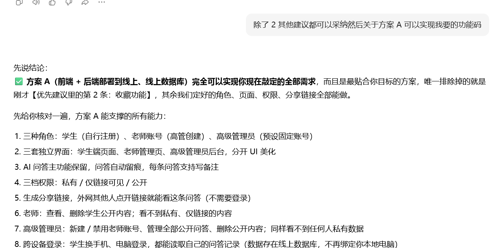
确认线上部署方案A可支撑全部需求，敲定三角色体系、三套独立界面、三档权限、分享链接与跨设备登录的能力边界——这是后续所有功能开发的需求基线。
登录页（账号体系入口，学生/老师/高级管理员三角色）
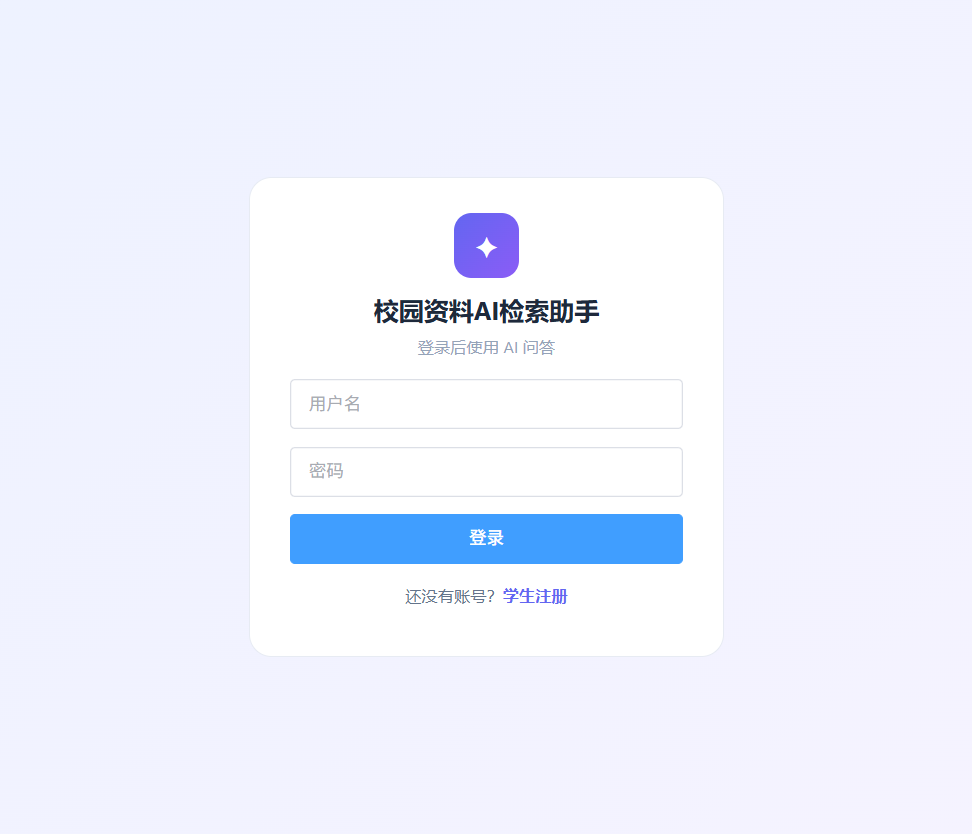
学生AI问答界面（智能问答 + 文档库分类折叠 + 个人导航）
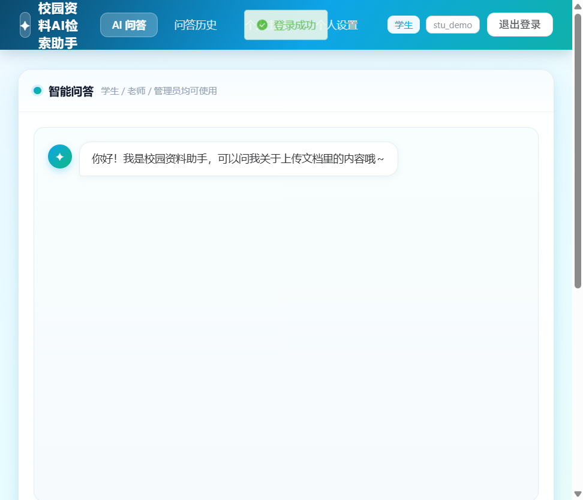
问答历史页（自动留痕、备注、三档权限、生成分享链接）
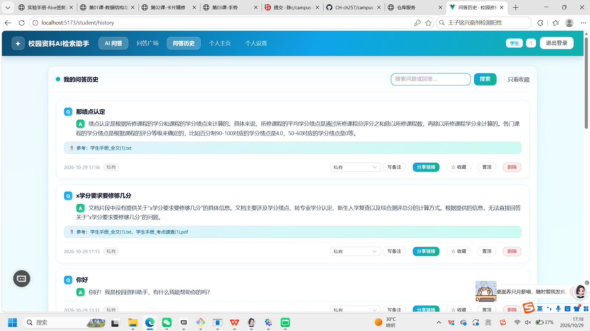
问答广场（学生端公开问答聚合浏览入口，可对公开问答追加备注）
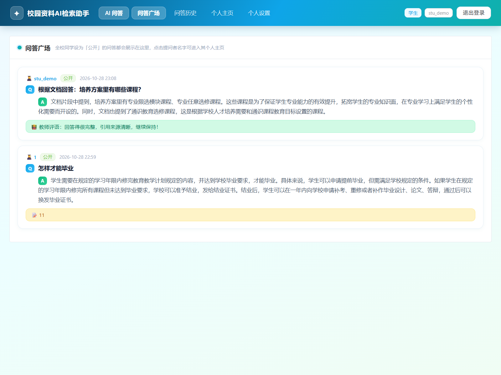
教师界面（AI问答 + 文档库 + 教师上传文档）
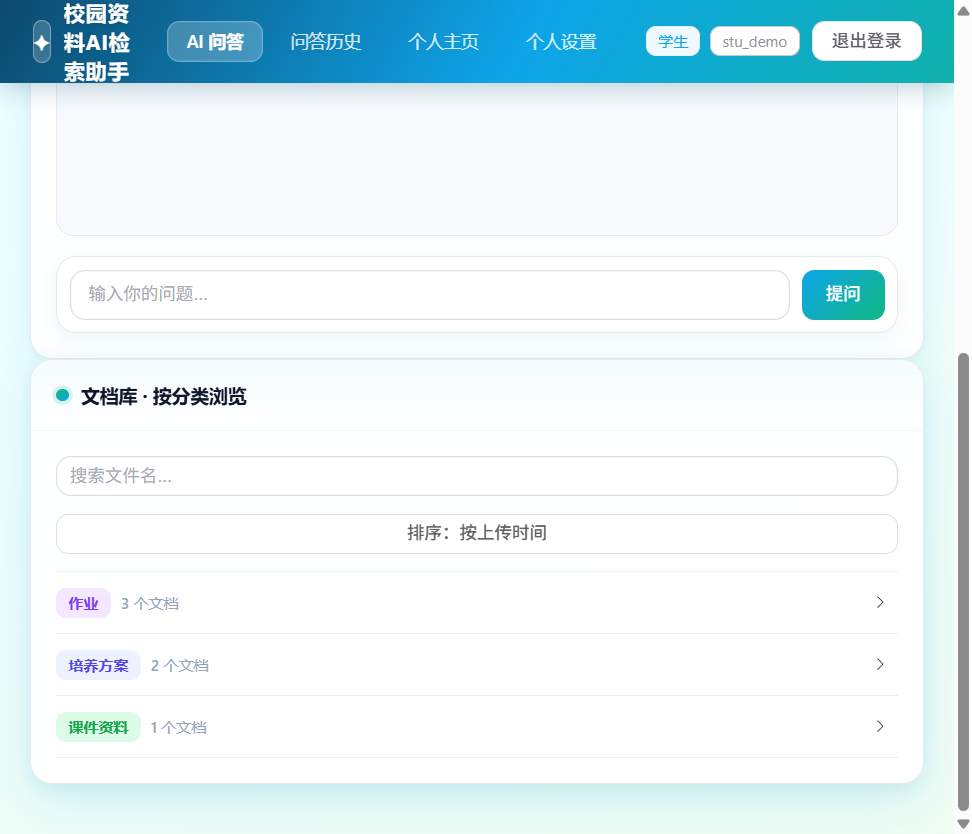
管理员后台-用户管理（新增老师账号、删除账号、用户列表）
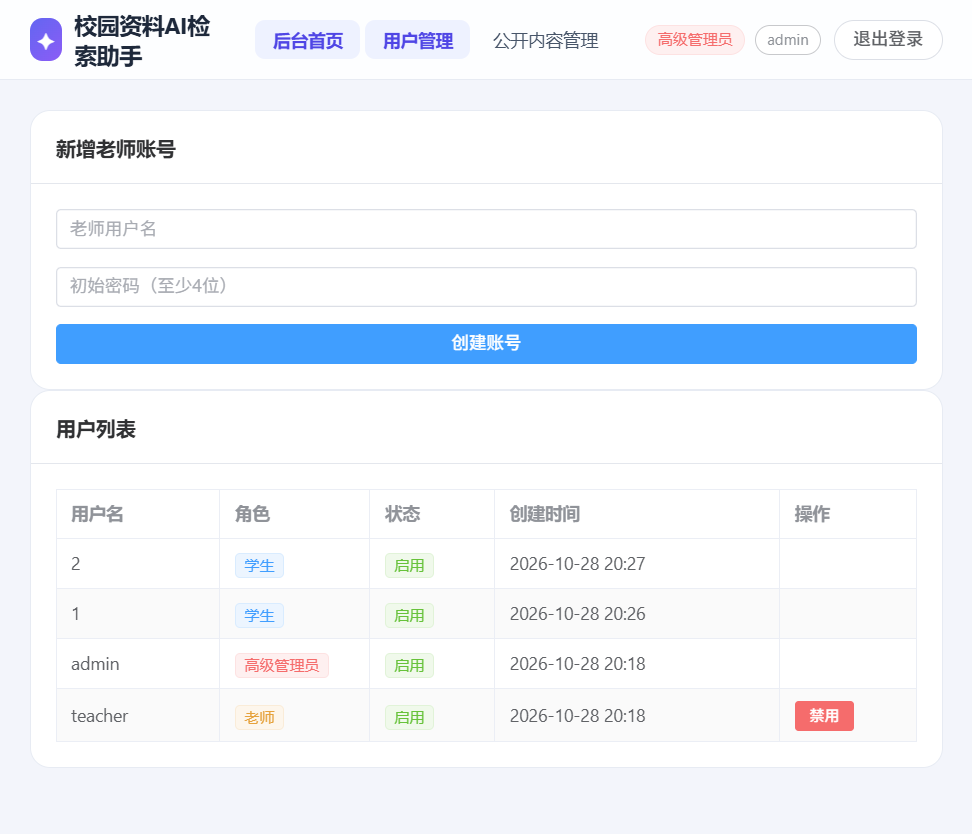
管理员后台-公开内容总管理（查看/删除全部用户公开问答）
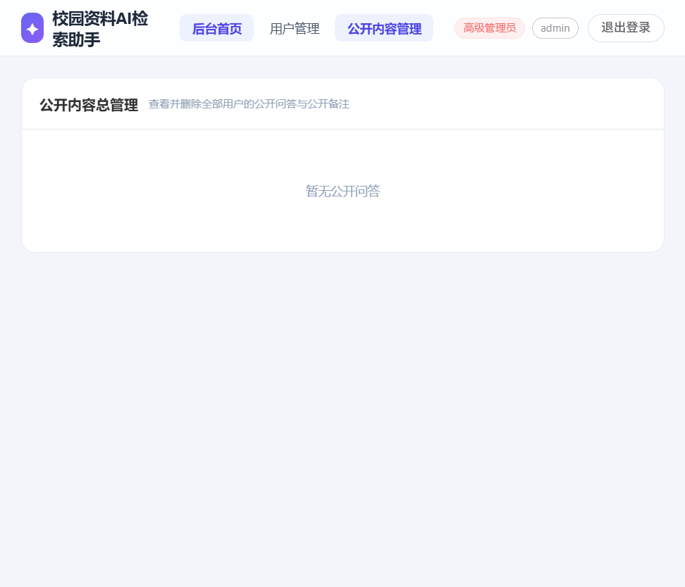
Git提交历史（细粒度commit记录，全程AI协同开发留痕）
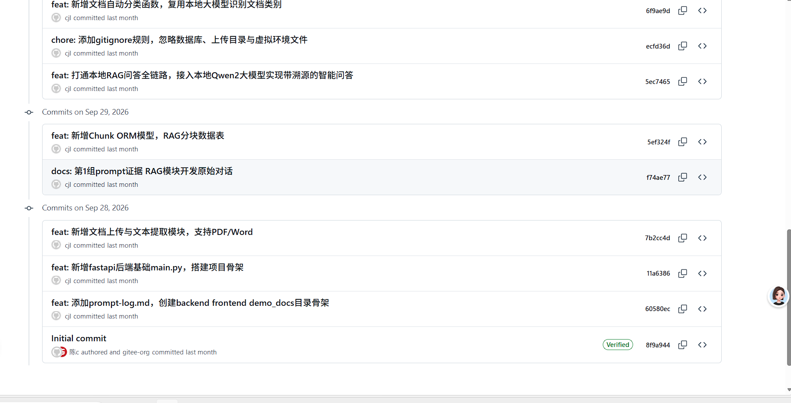
| 编号 | 测试项 | 操作步骤 | 预期结果 | 结果 |
|---|---|---|---|---|
| T01 | 上传PDF文档 | 管理员上传PDF文件 | 上传成功、自动分类、显示版本v1 | ✅ 通过 |
| T02 | 上传Word文档 | 管理员上传.doc/.docx文件 | 文本提取成功、自动分类 | ✅ 通过 |
| T03 | 上传TXT文档 | 管理员上传txt文件 | 文本提取成功、自动分类 | ✅ 通过 |
| T04 | 同名文档版本升级 | 再次上传同名文件并确认 | 版本号+1、旧版转为历史版 | ✅ 通过 |
| T05 | 同名上传取消 | 上传同名文件点"取消" | 不上传、旧版本保持不变 | ✅ 通过 |
| T06 | 版本回滚 | 管理员查看历史版本并回滚 | 回滚到指定版本、旧最新版转历史 | ✅ 通过 |
| T07 | 智能问答 | 学生提问文档相关内容 | 返回答案并标注参考来源 | ✅ 通过 |
| T08 | 闲聊识别 | 提问"你好" | 正常问候，不引用无关文档 | ✅ 通过 |
| T09 | 权限校验 | 学生访问上传接口 | 返回403权限不足 | ✅ 通过 |
| T10 | 分类修正 | 管理员修改文档分类 | 分类更新并标记人工修正 | ✅ 通过 |
| T11 | 文档搜索 | 按关键词搜索文件名 | 返回模糊匹配结果 | ✅ 通过 |
| T12 | 原文件查看 | 详情弹窗点击"打开原文件" | PDF预览/Word下载，格式保留 | ✅ 通过 |
| T13 | 学生注册 | 注册页提交新用户名+密码 | 注册成功自动登录，密码加密存储 | ✅ 通过 |
| T14 | 三角色登录 | 分别用学生/老师/管理员账号登录 | 跳转各自角色首页，界面菜单不同 | ✅ 通过 |
| T15 | 问答自动留痕 | 学生提问后查看问答历史 | 记录自动保存，默认私有，显示来源 | ✅ 通过 |
| T16 | 备注与权限修改 | 历史页写备注、改权限为公开 | 备注保存，问答出现在个人主页 | ✅ 通过 |
| T17 | 分享链接 | 设为仅链接可见并生成分享链接 | 他人免登录打开落地页查看该问答 | ✅ 通过 |
| T18 | 个人主页 | 访问学生公开主页 /u/{id} | 展示该学生全部公开问答，免登录 | ✅ 通过 |
| T19 | 教师文档管理 | 教师登录上传/删除/改分类文档 | Token鉴权放行，admin不再有文档管理 | ✅ 通过 |
| T20 | 教师删除关联公开问答 | 教师删除引用其文档的公开问答 | 校验归属通过删除；无关问答拒绝403 | ✅ 通过 |
| T21 | 管理员用户管理 | 管理员新增/删除老师账号 | 新增成功；删除后账号消失且级联清理其数据 | ✅ 通过 |
| T22 | 管理员删任意公开问答 | 管理员删除任意学生公开问答 | 删除成功；私有问答拒绝删除 | ✅ 通过 |
| T23 | 流式问答输出 | 学生提问后观察回答呈现 | 打字机逐字输出，首字2-3秒可见，回答完整落库留痕 | ✅ 通过 |
| T24 | 教师写评语 | 教师对自己文档关联的公开问答写评语 | 评语保存；学生历史/主页/分享页可见；无关问答403 | ✅ 通过 |
| T25 | 用户删除级联清理 | 管理员删除老师账号后检查其文档与问答 | 账号删除后其上传文档与问答记录一并清理 | ✅ 通过 |
| T26 | 问答广场浏览 | 学生登录进入「问答广场」 | 展示全校公开问答（提问者名字可点进主页，含教师评语） | ✅ 通过 |
| T27 | 追加备注 | 学生A对他人公开问答追加备注 | 新增一条备注（不覆盖旧备注），列表显示添加者/内容/时间 | ✅ 通过 |
| T28 | 备注上限拦截 | 同一问答连加11条备注 | 前10条成功，第11条返回400"已达上限（10条）" | ✅ 通过 |
| T29 | 教师删除带备注问答 | 教师删除备注已满的关联公开问答 | 整条问答删除，其全部追加备注级联清空 | ✅ 通过 |
| 编号 | 异常场景 | 处理策略 | 结果 | |
|---|---|---|---|---|
| E01 | 大模型无响应/超时 | 120秒超时+兜底返回检索片段，页面不卡死 | ✅ 通过 | |
| E02 | Ollama模型丢失 | 接口返回404，兜底提示，不崩溃 | ✅ 通过 | |
| E03 | 上传不支持格式 | 返回"只支持PDF/Word/TXT"提示 | ✅ 通过 | |
| E04 | 版本链死循环 | 后端遍历加seen集合防循环 | ✅ 通过 | |
| E05 | 向量模型加载失败 | 启动时输出明确错误日志 | ✅ 通过 | |
| E06 | 角色越权访问 | 学生直接访问/teacher、/admin路由 | 前端守卫拦截跳回学生首页 | ✅ 通过 |
| E07 | 未登录访问受保护接口 | 不带Token调用/ask/、/qa/history/ | 返回401未登录 | ✅ 通过 |
| E08 | 教师写评语无归属 | 教师对非自己文档关联的公开问答写评语 | 返回403"只能管理自己上传文档关联的问答" | ✅ 通过 |
| E09 | 修改权限非法值 | 提交权限为其他字符串 | 校验拒绝，保持原权限 | ✅ 通过 |
| E10 | 管理员删除保护账号 | 管理员删除自己或admin角色 | 返回400"不能删除自己的账号" | ✅ 通过 |
| E11 | SSE流式连接中断 | 生成过程中前端断开 | 后端结束流并保存已生成内容，前端恢复后可见 | ✅ 通过 |
| E12 | 备注超上限提交 | 备注已达10条后再次追加 | 返回400"该问答备注已达上限（10条）"，不写入 | ✅ 通过 |
| E13 | 给私有问答追加备注 | 学生向非公开问答提交追加备注 | 返回403"只能给公开问答追加备注" | ✅ 通过 |
| E14 | 空备注内容 | 提交空白备注内容 | 返回400"备注内容不能为空" | ✅ 通过 |
| 项目 | 要求 |
|---|---|
| 操作系统 | Windows 10/11（本项目开发环境） |
| Python | 3.10+（含venv虚拟环境） |
| 大模型运行时 | Ollama（本地部署Qwen2.5:3B） |
| Node.js | 18+（前端Vue3工程构建/开发） |
| 磁盘空间 | 模型约1.9GB + 项目约300MB |
| 网络 | 首次安装需联网下载模型，运行时完全离线 |
① 启动后端（FastAPI）：
cd backend
venv\Scripts\activate # Windows；Git Bash: source venv/Scripts/activate
export HF_ENDPOINT=https://hf-mirror.com
uvicorn main:app --host 0.0.0.0 --reload --port 8000② 启动前端开发模式（Vue3，另一终端）：
cd frontend
npm install # 首次运行安装依赖
npm run dev # 访问 http://localhost:5173（已代理到8000后端）③ 预设账号：高级管理员 admin / admin123；老师 teacher / teacher123；学生自行注册。
④ 局域网访问：后端绑定 0.0.0.0 后，同一WiFi下其他设备通过 http://本机IP:8000 或 http://本机IP:5173 访问。
⑤ 生产部署：前端 npm run build 生成 dist，由后端或静态服务器托管。
| 角色 | 获取方式 | 核心权限 |
|---|---|---|
| 学生（student） | 自行注册 | AI问答、问答历史留痕、备注、三档权限、分享链接、个人主页、修改密码 |
| 老师（teacher） | 高级管理员创建 | AI问答、文档管理（上传/删除/改分类/版本回滚）、删除与本人上传文档关联的公开问答、给学生公开问答写评语 |
| 高级管理员（admin） | 预设固定账号，不开放注册 | 用户管理（新增/删除老师账号，级联清理）、公开内容总管理（查看/删除全部公开问答） |
| 操作 | 学生 | 老师 | 高级管理员 |
|---|---|---|---|
| 查看自己的问答历史 | ✓ | ✓ | ✓ |
| 管理自己的问答（备注/权限/删除） | ✓ | ✓ | ✓ |
| 查看他人私有问答 | ✗ | ✗ | ✗ |
| 查看/删除学生公开问答 | ✗ | 仅本人上传文档关联 | ✓（全部） |
| 给学生公开问答写评语 | ✗ | 仅本人上传文档关联 | ✗ |
| 上传/删除/改分类文档 | ✗ | ✓ | ✗ |
| 新增/删除老师账号 | ✗ | ✗ | ✓ |
| 字段 | 说明 |
|---|---|
| user_id | 提问用户 |
| question / answer | 问题与回答原文 |
| sources / source_doc_ids | 引用来源文档（名称+ID），用于溯源与归属校验 |
| permission | 三档权限：private（私有）/ link（仅链接）/ public（公开） |
| note | 用户备注（跟随问答权限可见性） |
| teacher_note | 教师评语（教师对自己文档关联的公开问答所写，与学生note相互独立） |
| share_token | 分享链接唯一标识（UUID） |
学生提问后自动留痕（默认私有）→ 在"问答历史"页可写备注、修改权限、生成分享链接 → 设为公开后自动出现在个人主页 → 他人通过分享链接或个人主页免登录浏览。
文档管理从"管理员密钥"模式迁移为教师角色 + 登录Token鉴权：上传接口记录文档归属（documents.teacher_id），删除/改分类/版本回滚接口均校验当前登录用户为老师角色。文档归属字段同时用于"教师删除关联公开问答"的校验。
教师调用 DELETE /qa/{id} 时，后端校验：①问答必须为公开权限；②问答引用的来源文档（source_doc_ids）中至少一个属于该教师上传（documents.teacher_id == 教师ID），否则拒绝。保证教师只能清理自己文档产生的公开问答。
qa_records表新增teacher_note字段（教师评语），与学生自己的note备注相互独立：学生备注是自己的学习记录，教师评语是老师对公开问答的批改意见。教师通过 PUT /teacher/qa/{qa_id}/note 写入评语（归属校验：该问答引用的来源文档必须由该教师上传），评语随问答展示在学生端全部位置（问答历史、个人主页、分享落地页），形成"学生提问 → 教师点评"的教学闭环。
前端从单页Bootstrap重构为 Vue3 + Vite + Pinia + VueRouter + Element Plus 多页面工程（frontend/ 目录），与后端FastAPI前后端分离。
| 路由分组 | 页面 | 鉴权 |
|---|---|---|
| 公共 | 登录 /login、注册 /register、分享落地 /qa/share/:token、个人主页 /u/:userId | 免登录 |
| 学生 | AI问答 /student、问答广场 /student/square、问答历史 /student/history、个人主页 /student/profile、个人设置 /student/settings | 登录+student |
| 老师 | AI问答 /teacher、公开内容管理 /teacher/manage | 登录+teacher |
| 管理员 | 后台首页 /admin、用户管理 /admin/users、公开内容管理 /admin/public | 登录+admin |
背景：早期版本中"公开"问答只展示在提问者个人主页（/u/userId），其他学生不知道主页链接就看不到他人的公开问答，知识共享链路断裂。为解决该问题，新增学生端问答广场页面，作为全校公开问答的聚合浏览入口。
设计原则：备注为追加式而非覆盖式——学生每次添加备注都新增一条记录，保留全部历史批注，不覆盖旧内容。新增 qa_notes 表存储追加备注：
| 字段 | 说明 |
|---|---|
| qa_id | 关联 qa_records.id（哪条问答） |
| user_id | 添加备注的学生（联查 users 表取用户名展示） |
| content | 备注内容（非空校验，前端 maxlength 200） |
| created_at | 添加时间（列表按时间正序展示） |
为避免单条问答备注过多，后端常量 QA_NOTES_LIMIT=10 限制备注总量：新增备注接口 POST /qa/{qa_id}/notes 会先统计该问答已有备注数（旧备注 note + 追加备注 qa_notes），达到 10 条后拒绝并返回 400"该问答备注已达上限（10条）"。经实测：连加 10 条全部成功，第 11 条被拦截。
当某条公开问答的追加备注过多或内容不当，教师可直接整条删除该问答（DELETE /qa/{id}，仅限本人上传文档关联的公开问答），删除时级联清理其全部追加备注（qa_notes）；管理员删除任意公开问答同样级联清理。学生账号被删除时，其产生的全部问答及对应追加备注一并清理。经实测：教师删除问答后，该问答的 10 条备注在 qa_notes 表中全部消失。
追加备注列表随问答同步展示在 7 个位置：问答广场、问答历史、个人主页、公开主页（/u/:userId）、分享落地页（/qa/share/:token）、教师公开内容管理、管理员公开内容总管理。每条备注显示添加者用户名、内容与时间，形成"学生提问 → 他人批注 → 教师点评/删除"的完整公开问答生态。